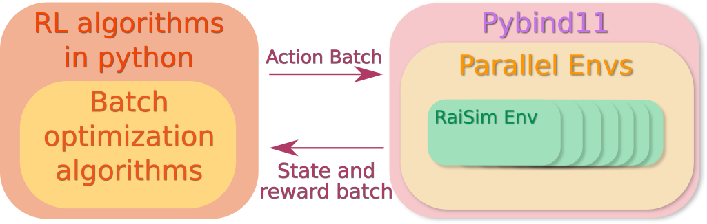

RaisimGymTorch¶
What is raisimGymTorch?¶
{kind=link}
raisimGymTorch is a gym environment example with raisim. A simple pytorch-based RL framework is provided as well but it should work well with any other RL frameworks. Instead of using raisimPy, pybind11 wraps a vectorized environment in C++ so that the parallelization happens in C++. This improves the speed tremendously.
Dependencies¶
raisim dependencies
(optional) virtualenv or anaconda
Why raisimGymTorch?¶
raisimGymTorch is designed such that you can collect tens of billions of state transitions with a single desktop machine. Such a number of state transitions is necessary to train for very difficult tasks. An example of a trained policy is shown below


About 160 billion time steps were used to train the above controller. raisimGymTorch can process about 500k time steps per second in the above environment (with 3950x) with an actuator network (which is as heavy as the physics simulation).
How to run the example¶
We provide an ANYmal locomotion example. In the raisimGymTorch directory,
python setup.py develop
python raisimGymTorch/env/envs/rsg_anymal/runner.py
To visualize the policy, run raisimUnity as well.
It will show/record the performance of the policy every 200 iterations.
All recorded videos can be found in raisimlib/raisimUnity/<OS>/screenshots
How does it work?¶
RaiSimGymTorch wraps a c++ environment (i.e., ENVIRONMENT.hpp) as a python library using Pybind11.
When you call python3 setup.py develop, all environments under raisimGymTorch/raisimGymTorch/env/envs are compiled.
The compiled libraries are stored in raisimGymTorch/raisimGymTorch/env/bin.
All the rest happens in Python.
You can import your environment from your python code.
For example, the anymal locomotion example can be imported as from raisimGymTorch.env.bin import rsg_anymal
Your launch file (e.g., runner.py) can be customized for your need.
How to add a custom environment?¶
You can add your environment in raisimGymTorch/raisimGymTorch/env/envs.
If you want to keep your source file somewhere else, then add a symlink to it in raisimGymTorch/raisimGymTorch/env/envs.
An example environment can be found here
Code structure (if you are curious)¶
ENVIRONMENT class is where you define the dynamics, reward, termination condition and so on.
This class inherits from RaisimGymEnv, which add basic functionalities to the environment such as setSimulationTimeStep, setControlTimeStep, getObDim and so on.
If RaisimGymEnv is not general enough for you, you can also make ENVIRONMENT independent from RaisimGymEnv.
RaisimGymEnv is wrapped by VectorizedEnvironment, which parallelizes the environment using openmp.
You can consider it similar to VectorEnv in OpenAI Baselines but RaisimGym parallelization happens in C++, which makes it orders of magnitude faster.
raisim_gym.cpp is a Pybind11 wrapping of VectorizedEnvironment.
It simply defines the interface functions.
Finally, RaisimGymVecEnv is a python class that wraps a python library created from raisim_gym.cpp.